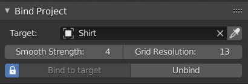

Bind Project#
 This tool will snap and bind one 3d mesh, on surface of another, with help of temporary grid mesh. The source object will be following the target, without flattening the geometry, like 'Shrink wrap' modifier does. It is useful for attaching pockets, bags, decals to surface of simulated mesh. Projected Obj - Object that will be 'glued' to surface of cloth. Target - usually the cloth object. Smooth Strength - Helps to smooth out the deformation (prevents abrupt changes in geometry of Projected Obj after binding) Grid Resolution - resolution of projection. Bigger gives better results. Bind/Unbind - snap Projected Object to target. It will folllow the target, until user disable it with 'Unbind'